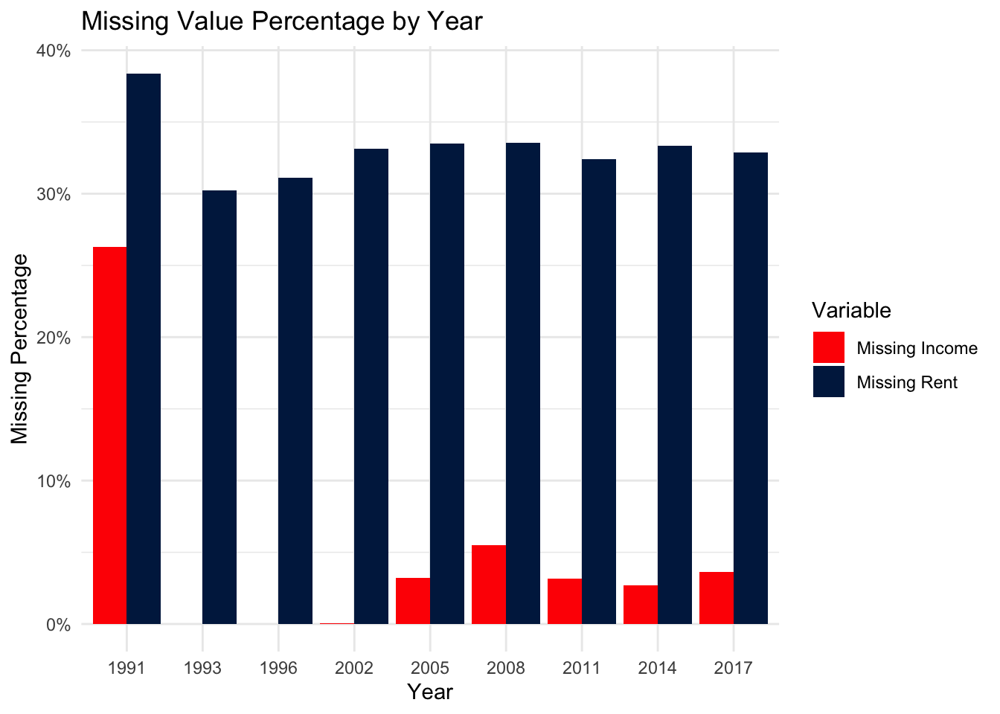
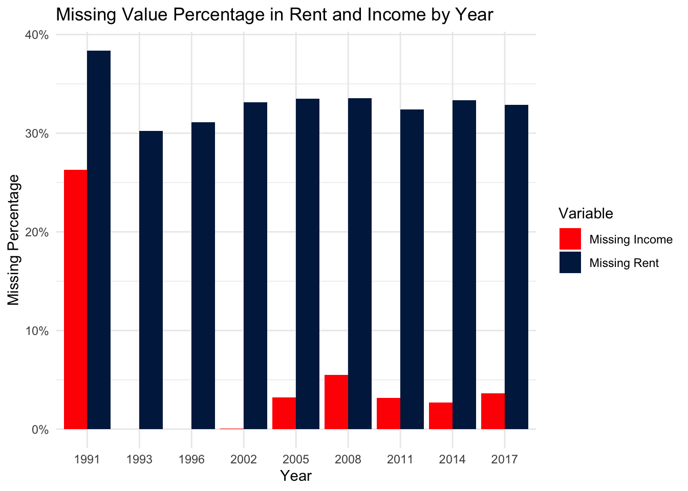

The project builds on the New York City Housing and Vacancy Survey (NYCHVS) published by the New York City Department of Housing Preservation and Development (HPD) in collaboration with the U.S. Census Bureau. The NYCHVS is a citywide survey conducted about every three years to monitor NYC’s housing stock and residency. The survey is based on a statistical sample of housing units, and the data are collected through in-person interviews and on-site observations by field representatives, covering information on occupancy status, rent, building characteristics, housing quality, and household demographics. Occupied units are surveyed by speaking directly with residents, while vacant units are documented through key informants such as owners or building managers. Public Use Microdata Files (PUFs) are available for eleven years in csv format, accompanied by user guide and record layouts. The dataset is released in four linked files. The All Units file contains information on every housing unit, including both occupied and vacant; the Occupied/Vacant files are household-level data for occupied/unoccupied units; and the Person file includes individual-level demographic information. For this project, we use data from 1991 to 2023, focusing on variables related to affordability and vacancy rate analysis.
Although each NYCHVS cycle follows a consistent structure, minor updates are made each time to reflect changes in the housing market and survey methods. Subtle differences in variable names, variable definitions, and sampling design between survey waves may introduce potential issues, which requires additional attention in our analysis. Another important limitation is that, for privacy protection, some detailed household-level information is masked or top-coded, which may reduce the precision of certain analyses.
ggplot(na_plot_df, aes(x =reorder(dataset, missing_rate), y = missing_rate, fill = missing_rate)) +geom_col(width =0.8) +geom_text(aes(label = scales::percent(missing_rate, accuracy =0.01)),vjust =-0.5, size =3.5) +scale_fill_gradient(low =cividis(3)[1], high ="red") +scale_y_continuous(labels = scales::percent_format()) +labs(title ="Missing Value Overview by Dataset",x ="Dataset",y ="Missing Value Percentage" ) +theme_minimal()

The plot shows that none of the NYCHVS datasets contain explicit NA values, which means every cell is filled. However, we noticed from the UserGuide and Codebook that NYCHVS encodes missing or inapplicable responses directly within variable values, using codes such as –2, -1, 9999/99999, to represents “not reported” or “inapplicable”. Because the datasets contain hundreds of variables, identifying all encoded missing-value formats would be unnecessarily complex. Instead, we focus only on variables significant or directly relevant to our analysis , apply the official NYCHVS coding rules, and convert value-encoded codes into proper missing values.
Code
## Due to the high volume of the variables, we only explore missing values existed in the variables we used for analysis# ---------- 21 & 23 datasets ----------person21_miss <- person21 |>mutate(missing_income = total_inc_rec_p ==-2222222222 ) |>count(missing_income)occ21_miss <- occ21 |>mutate(missing_rent = rent_amount ==-2 ) |>count(missing_rent)person23_miss <- person23 |>mutate(missing_income = total_inc_p ==-2222222222 ) |>count(missing_income)hh23_miss <- occ23 |>mutate(missing_rent = rent_amount ==-2 ) |>count(missing_rent)# ---------- 91–17 dataset -----------df_91_17_missing <- occ_before |>mutate(inc =as.numeric(inc),rent =as.numeric(rent),year =as.numeric(year),# missing_income is TRUE when logic makes inc == NAmissing_income =case_when( year <=1996& inc ==999999~FALSE, # becomes 0 → not missing year <=2002& inc ==9999999~FALSE, # becomes 0 → not missing inc >999997~TRUE, # missingTRUE~FALSE ),# missing_rent according to your rulesmissing_rent =case_when( year ==1991& rent %in%c(9999, 9998) ~TRUE, year <=2010& rent ==9999~TRUE, year >=2011& rent ==99999~TRUE,TRUE~FALSE ) ) |>summarise(total =n(),missing_income =sum(missing_income),missing_rent =sum(missing_rent) )missing_plot <- occ_before |>mutate(inc =as.numeric(inc),rent =as.numeric(rent),year =as.numeric(year),missing_income =case_when( year <=1996& inc ==999999~FALSE, year <=2002& inc ==9999999~FALSE, inc >999997~TRUE,TRUE~FALSE ),missing_rent =case_when( year ==1991& rent %in%c(9999, 9998) ~TRUE, year <=2010& rent ==9999~TRUE, year >=2011& rent ==99999~TRUE,TRUE~FALSE ) ) |>group_by(year) |>summarise(missing_income_rate =mean(missing_income),missing_rent_rate =mean(missing_rent) )|>pivot_longer(cols =c(missing_income_rate, missing_rent_rate),names_to ="variable",values_to ="missing_rate" )ggplot(missing_plot, aes(x =factor(year), y = missing_rate, fill = variable)) +geom_col(position ="dodge") +scale_fill_manual(values =c("missing_income_rate"="red", "missing_rent_rate"=cividis(3)[1]),labels =c("missing_income_rate"="Missing Income", "missing_rent_rate"="Missing Rent"))+scale_y_continuous(labels = scales::percent_format()) +labs(title ="Missing Value Percentage in Rent and Income by Year",x ="Year",y ="Missing Percentage",fill ="Variable" ) +theme_minimal()

Although the plot shows that rent amount has a relatively high “missing” rate across survey years, this missing does not indicate true non-response. In the NYCHVS microdata, rent is coded as “Not Applicable” for households that are owner-occupied or occupied rent-free, meaning these units legitimately do not report a rent amount. Because our rent-based affordability analysis focuses specifically on renter households, these Not-Applicable entries are treated as NA in the rent variable. The apparent 30-38% “missing rent” therefore reflects the share of owner households rather than measurement error.
Importantly, these units are not dropped from analysis altogether. Instead, owner-occupied households are incorporated separately through mortgage payment variables, allowing us to evaluate affordability for owners using mortgage burden rather than rent burden. Thus, the high missing rate in the rent field should be interpreted as a structural feature of housing tenure distributions rather than a data quality issue.